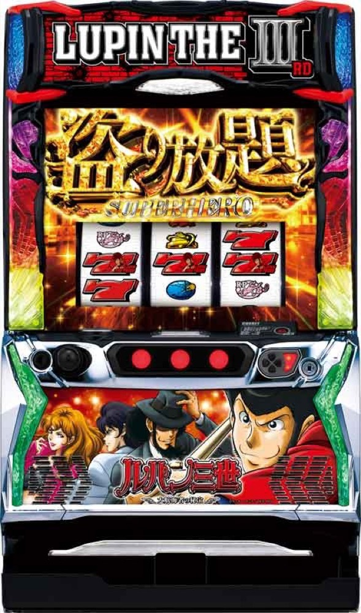

Lルパン三世 大航海者の秘宝
50〜300GのSUPER HEROで、直乗せ・8Gのルパンゲーム・4種類のBIG CHANCEを重ねる。
- 導入
- 2024年12月
- メーカー
- 平和
- 分類
- パチスロ
主要スペック
8GのICPO CHALLENGE、ダブル7直行／シングル7ボーナス、初期50〜300GのSUPER HERO、ルパンゲーム、キャラ別BIG CHANCE、怪盗RUSH、32Gの『俺の名はルパン三世ゾーン』、上位ATまでを機種専用画面で再現します。
- ICPO CHALLENGEは8G・期待度約43%以上
- 初当りの約70%はダブル7揃いでAT直行
- SUPER HEROは初期50〜300G・純増約2.7枚/G
- 上位ATは初期100〜300G・純増約4.7枚/G
Lルパン三世 大航海者の秘宝の見どころと計算条件
8GのICPO CHALLENGE、ダブル7直行／シングル7ボーナス、初期50〜300GのSUPER HERO、ルパンゲーム、キャラ別BIG CHANCE、怪盗RUSH、32Gの『俺の名はルパン三世ゾーン』、上位ATまでを機種専用画面で再現します。
ルパン 大航海者を数字で早分かり
ICPO CHALLENGEからSUPER HERO、盗り放題 SUPER HEROまでの流れと、設定ごとの結果差を固定レートで比較できます。
30秒で分かるルパン 大航海者
50〜300Gのゲーム数管理ATで直乗せ・8G CZ・4種類の特化ゾーンを重ね、32Gの上位ジャッジを目指す上乗せ型です。
こんな遊び方に向いている
- 残りゲーム数を見ながら直乗せとCZを待ちたい
- 4種類のBIG CHANCEをPUSHで開きたい
- 失敗でも100G以上が残る上位ジャッジを試したい
遊ぶ前に確認したいこと
- 初当り・AT初当り・主要ゲーム数・純増は公開値
- ゲーム数上乗せと獲得枚数を分けて表示
- 未公表のイベント配分は体験用代表値
ICPO CHALLENGEと初当り7揃い
通常時は規定ゲーム数とレア役から8GのICPO CHALLENGEを目指します。成功期待度は設定1約43.3%〜設定6約51.8%で、成功すると初当りへ進みます。
初当りの約70%はダブル7揃いでSUPER HEROへ直行。シングル7揃いは30GのキャラBONUSで、AT期待度は約30%です。専用画面では8Gを進め、PUSHで7揃いラインとAT当落を開きます。
SUPER HEROとトリプル抽選
SUPER HEROは初期50〜300G・純増約2.7枚/Gのゲーム数管理型AT。レア役・デカ目でゲーム数直乗せ、ルパンゲーム、BIG CHANCEを同時に抽選します。
デカ目は通常約1/357.7、デカ目高確中は約1/25。専用画面では残りゲーム数を10Gずつ減らし、直乗せとCZ・特化ゾーンを別々のPUSHで表示します。
8Gのルパンゲーム
ルパンゲームは8G継続するAT中CZで、成功期待度は約50%。デカ目・強チェリーなら勝利濃厚です。成功するとBIG CHANCEへ進みます。
規定ゲーム数とレア役の両方から抽選され、ゼニロボルパンゲームなら成功時に上位ATも濃厚。専用進行では8Gを最後まで進め、最終PUSHで当落を開きます。
4種類のBIG CHANCEと怪盗RUSH
BIG CHANCEは次元の一発上乗せ、五ェ門の分裂上乗せ、ルパンの高継続ループ上乗せ、不二子の怪盗RUSHの4種類。ダブル7揃いなら上乗せ性能が強化されます。
怪盗RUSHは1セット11Gのループ型で、お宝獲得ごとに上乗せ・BIG CHANCE・ATストック・上位ATなどを獲得。期待枚数は2300枚超です。キャラと報酬はPUSHまで伏せます。
俺の名はルパン三世ゾーンと上位AT
エンディング後は32Gの『俺の名はルパン三世ゾーン』へ。フリーズ発生で上位ATに入り、成功期待度は50%超です。失敗しても通常SUPER HEROを100G以上獲得します。
上位AT『盗り放題 SUPER HERO』は初期100〜300G・純増約4.7枚/G。基本のゲーム性を引き継ぎながら出玉速度が上がります。
固定条件と簡略化する範囲
- 約31.1G/50枚・1,000円46枚貸し・5.2枚交換で固定
- 設定1〜6の初当り・AT初当り・出玉率は公開設定別値
- ICPO、7揃い、ゲーム数管理AT、直乗せ、ルパンゲーム、4種類のBIG CHANCE、怪盗RUSH、上位ATを専用進行
- AT中イベント出現率、BIG CHANCE種別、怪盗RUSH報酬など未公表部分は体験用代表値
- 19,000枚到達時はコンプリート表示
平均Gと投資目安の計算
掲載するSUPER HERO初当り約1/421.5は設定1基準です。当サイトでは50枚あたり31.1G、1,000円46枚貸しの固定条件から、設定1基準の平均投資目安を約14,700円と計算します。
シミュレーターでは設定1〜6を均等抽選します。設定1〜6で公開されている初当り値を個別に使います。公開されていない特化ゾーン・上位到達率の設定差は加えません。 換金は5.2枚交換で固定し、結果とランキングに設定を表示します。
シミュレーション結果の見方
当るまでICPO CHALLENGE・SUPER HEROまでのゲーム数
設定設定1・2・3・4・5・6から抽選された今回の設定
上位到達俺の名はルパン三世ゾーンと盗り放題 SUPER HEROへの到達
最終収支差枚と5.2枚交換の収支目安
結果は自動で「マイ記録」に保存され、同じ機種を何回試したか、最高収支、勝率をあとから確認できます。
簡易シミュレーターについて
ICPO CHALLENGE・SUPER HERO・盗り放題 SUPER HEROの流れを固定条件で体験できます。JavaScriptを有効にすると、この位置にシミュレーター、演出、マイ記録、機種別ランキングが表示されます。
結果は娯楽・確率理解のための参考表示です。金銭的価値や交換価値はなく、実際の勝敗や収支を保証しません。18歳未満の方の利用はお控えください。
ルパン 大航海者のよくある質問
ルパン 大航海者はどんな台？
8GのICPO CHALLENGE、ダブル7直行／シングル7ボーナス、初期50〜300GのSUPER HERO、ルパンゲーム、キャラ別BIG CHANCE、怪盗RUSH、32Gの『俺の名はルパン三世ゾーン』、上位ATまでを機種専用画面で再現します。 ICPO CHALLENGEは8G・期待度約43%以上が主な確認ポイントです。
ルパン 大航海者の平均投資目安は？
設定1基準のSUPER HERO初当り約1/421.5と、50枚あたり31.1G・46枚貸しの固定条件から、平均14,700円を目安として表示します。実際の設定や遊技状況で結果は変わります。
設定とゲームの流れはどう抽選する？
開始時に設定1・2・3・4・5・6から1つを均等抽選し、ICPO CHALLENGE、SUPER HERO、俺の名はルパン三世ゾーン、盗り放題 SUPER HEROの順で到達を判定します。設定は最終結果とランキングに表示します。
収支はどう計算する？
1,000円46枚貸し・5.2枚交換の固定条件で投資、換金、収支目安を計算します。実店舗の再プレイ、持ちメダル、端数処理は含みません。